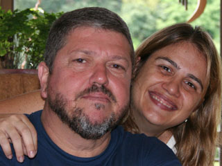

TOMIL GONÇALVES/indicado ao prêmio “22 International Television Science Program Festival”
Co-autor de SENHORITA CARIOCA é indicado a prêmio internacional por programas científicos para TV. Tomil Gonçalves, diretor da série de TV “Nós da Escola” (Multirio), está entre os indicados da mostra competitiva “22 International Television Science Program Festival”. A festa de premiação acontece na noite de 16 de Outubro, aos pés da Torre Eiffel, em Paris. Co-autor do livro Senhorita Carioca, produção inédita sobre os bastidores da história do Rio de Janeiro com publicação prevista para 2007, Tomil Gonçalves acumula em sua carreira vários prêmios, nacionais e internacionais. Diretor artístico de televisão com formação acadêmica em Teatro pela UNI-RIO, desde o início dos anos 80 trabalha em produções para canais da TV aberta e por assinatura nas áreas de dramaturgia, eventos e programas infantis. Assina a direção de novelas, programas musicais e teatrais para o Ministério da Cultura, e documentários científicos patrocinados por instituições da área de saúde. Como ator, atuou em importantes montagens da cena teatral brasileira, como "Rasga Coração", "As Gralhas", e fez parte do primeiro elenco de "Saltimbancos", de Chico Buarque de Holanda. Saiba mais sobre o trabalho de Tomil Gonçalves em parceria com Raquel Boechat, nas páginas COMUNICAÇÃO ESTRATÉGICA e PROJETOS do site www.raquelboechat.com “22 International Television Science 16 de Outubro - Torre Eiffel, noite de outono em Paris. |
TOMIL GONÇALVES/indicado ao prêmio “22 International Television Science Program Festival” |
||||
|  |
|
|||
|
||||